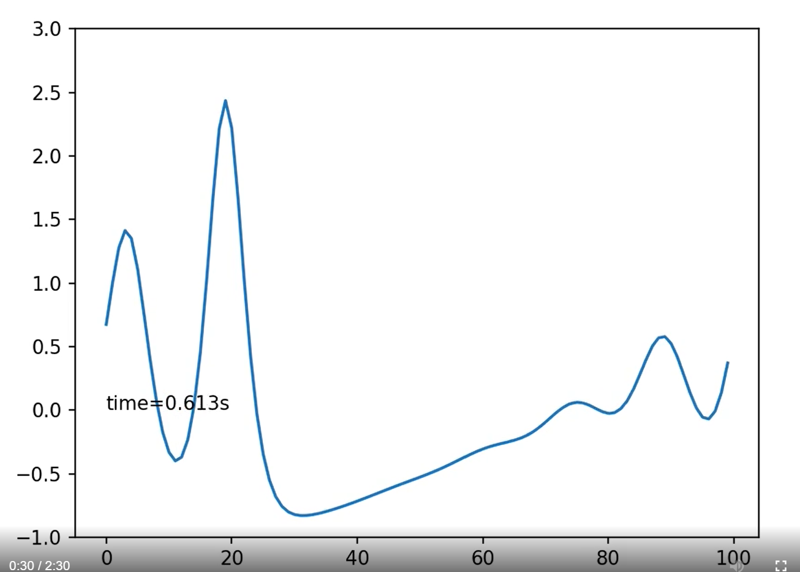
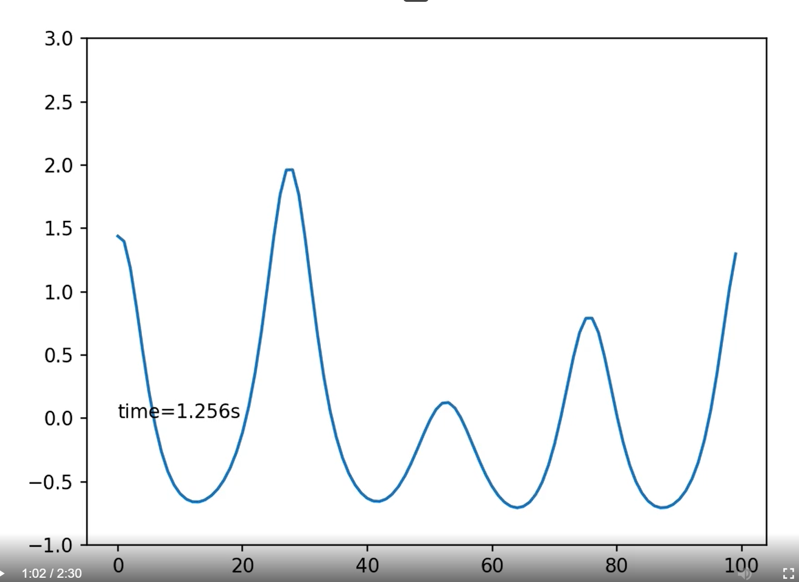

作业 解答
对KdV方程u t + u u x + δ 2 u x x x = 0 u_t+uu_x+\delta^2u_{xxx} = 0 u t + u u x + δ 2 u xxx = 0 u i j + 1 − u i j − 1 2 Δ t + 1 3 ( u i − 1 j + u i j + u i + 1 j ) u i + 1 j − u i − 1 j 2 Δ x + δ 2 ( u i + 2 j − 2 u i + 1 j + 2 u i j − u i − 1 j ) 2 Δ x 3 = 0 \frac{u_i^{j+1} -u_i^{j-1}}{2\Delta t} +\frac 1 3 (u_{i-1}^j+u_i^j+u_{i+1}^j)\frac{u_{i+1}^j-u_{i-1}^j}{2\Delta x}+\frac {\delta^2(u_{i+2}^j-2u_{i+1}^j+2u_i^j-u_{i-1}^j)}{2\Delta x^3}=0 2Δ t u i j + 1 − u i j − 1 + 3 1 ( u i − 1 j + u i j + u i + 1 j ) 2Δ x u i + 1 j − u i − 1 j + 2Δ x 3 δ 2 ( u i + 2 j − 2 u i + 1 j + 2 u i j − u i − 1 j ) = 0 u u u 视频 所示:


之后，几个波包各自移动，相互不发生干扰：下图中显示了t = 2.043 s t=2.043s t = 2.043 s
在演化时间范围内，图像有一定抖动，但总体稳定性良好
对T(x,y,t)在空间坐标上做傅里叶变换,将方程转变为T ~ ( k ⃗ , t ) \tilde{T}(\vec k,t) T ~ ( k , t ) t t t T2.mp4 所示.视频中取初态为以中心( 0.5 , 0.5 ) (0.5,0.5) ( 0.5 , 0.5 ) T2_.mp4 ,可以很好地反映长时间温度分布的状况∂ T ∂ y ∣ y = 0 , 1 = 0 {\partial T\over\partial y}|_{y=0,1} =0 ∂ y ∂ T ∣ y = 0 , 1 = 0 T ∣ x = 0 , 1 = 0 T|_{x=0,1}=0 T ∣ x = 0 , 1 = 0
由波动方程及其边界条件u ∣ boundary = 0 , 0 ≤ x , y ≤ 1 u|_{\text{boundary}}=0,0\le x,y\le 1 u ∣ boundary = 0 , 0 ≤ x , y ≤ 1 u ( x , y , t ) = ∑ m , n = 1 ∞ A m n ( t ) sin m π x sin n π y x , y ∈ [ 0 , 1 ] , t ≥ 0 u(x,y,t) = \sum_{m,n=1}^{\infty } A_{mn}(t)\sin m\pi x\sin n\pi y\quad x,y\in [0,1],t\ge 0 u ( x , y , t ) = m , n = 1 ∑ ∞ A mn ( t ) sin mπ x sin nπ y x , y ∈ [ 0 , 1 ] , t ≥ 0 A m n ( 0 ) = { 1 , m = 1 , n = 2 0 , otherwise A m n ′ ( 0 ) = 0 A_{mn}(0)=\begin{cases}
1, & m=1,n=2\\
0, & \text{otherwise}
\end{cases}\\
A_{mn}'(0) = 0 A mn ( 0 ) = { 1 , 0 , m = 1 , n = 2 otherwise A mn ′ ( 0 ) = 0 A m n ′ ′ ( t ) = λ ( − m 2 − n 2 ) π 2 A m n ( t ) A''_{mn}(t)= \lambda (-m^2-n^2)\pi^2 A_{mn}(t) A mn ′′ ( t ) = λ ( − m 2 − n 2 ) π 2 A mn ( t ) A 12 ( t ) = cos 5 λ π t ; A m n ( t ) = 0 , otherwise A_{12}(t)=\cos\sqrt{5\lambda}\pi t;A_{mn}(t)=0,\text{otherwise} A 12 ( t ) = cos 5 λ π t ; A mn ( t ) = 0 , otherwise λ = 1 \lambda = 1 λ = 1 u ( x , y , t ) = cos 5 π t sin π x sin 2 π y u(x,y,t) = \cos\sqrt{5 }\pi t\sin \pi x\sin 2\pi y u ( x , y , t ) = cos 5 π t sin π x sin 2 π y
对方程作离散化处理:定义u i j k ≡ u ( i Δ x , j Δ y , k Δ t ) , 0 ≤ i < N x , 0 ≤ i < N y , 0 ≤ t < N t u_{ij}^k \equiv u(i\Delta x,j\Delta y,k\Delta t),0\le i< N_x,0\le i< N_y,0\le t<N_t u ij k ≡ u ( i Δ x , j Δ y , k Δ t ) , 0 ≤ i < N x , 0 ≤ i < N y , 0 ≤ t < N t u i j k + 1 − 2 u i j k + u i j k − 1 ( Δ t ) 2 = λ ( u i + 1 , j k − 2 u i j k + u i − 1 , j k ( Δ x ) 2 + u i , j + 1 k − 2 u i j k + u i , j − 1 k ( Δ y ) 2 ) \frac{u_{ij}^{k+1}-2u_{ij}^k+u_{ij}^{k-1}}{(\Delta t)^2} = \lambda(\frac{u_{i+1,j}^k-2u_{ij}^k+u_{i-1,j}^k}{(\Delta x)^2}+\frac{u_{i,j+1}^k-2u_{ij}^k+u_{i,j-1}^k}{(\Delta y)^2}) ( Δ t ) 2 u ij k + 1 − 2 u ij k + u ij k − 1 = λ ( ( Δ x ) 2 u i + 1 , j k − 2 u ij k + u i − 1 , j k + ( Δ y ) 2 u i , j + 1 k − 2 u ij k + u i , j − 1 k ) u i j k + 1 = − u i j k − 1 + 2 u i j k + ( Δ t ) 2 λ ( u i + 1 , j k − 2 u i j k + u i − 1 , j k Δ x 2 + u i , j + 1 k − 2 u i j k + u i , j − 1 k Δ y 2 ) u_{ij}^{k+1}=-u_{ij}^{k-1}+2u_{ij}^k+(\Delta t)^2\lambda(\frac{u_{i+1,j}^k-2u_{ij}^k+u_{i-1,j}^k}{\Delta x^2}+\frac{u_{i,j+1}^k-2u_{ij}^k+u_{i,j-1}^k}{\Delta y^2}) u ij k + 1 = − u ij k − 1 + 2 u ij k + ( Δ t ) 2 λ ( Δ x 2 u i + 1 , j k − 2 u ij k + u i − 1 , j k + Δ y 2 u i , j + 1 k − 2 u ij k + u i , j − 1 k ) ∂ u ∂ t ∣ t = 0 = 0 {\partial u\over\partial t}|_{t=0}=0 ∂ t ∂ u ∣ t = 0 = 0 u i j − 1 = u i j 0 u_{ij}^{-1}=u_{ij}^0 u ij − 1 = u ij 0 u ∣ boundary = 0 u|_{\text{boundary}}=0 u ∣ boundary = 0 u − 1 , j k = u N x , j k = u i , − 1 k = u i , N y k = 0 u_{-1,j}^k =u_{N_x,j}^k= u_{i,-1}^k=u_{i,N_y}^k=0 u − 1 , j k = u N x , j k = u i , − 1 k = u i , N y k = 0 T3.py ,获得解的动画T3.mp4 .t 0 = 0.2175 t_0=0.2175 t 0 = 0.2175 5 π t 0 = 1.527 ≈ π 2 ≈ 1.57 \sqrt{5}\pi t_0=1.527\approx \frac \pi 2\approx 1.57 5 π t 0 = 1.527 ≈ 2 π ≈ 1.57
Δ t ≤ 1 λ ( 1 Δ x 2 + 1 Δ y 2 ) − 1 / 2 \Delta t\le \frac{1}{\sqrt \lambda }\left(\frac{1}{\Delta x^2}+\frac{1}{\Delta y^2}\right)^{-1/2} Δ t ≤ λ 1 ( Δ x 2 1 + Δ y 2 1 ) − 1/2 Δ x = Δ y = 40 \Delta x=\Delta y=40 Δ x = Δ y = 40 λ = 1 \lambda = 1 λ = 1 Δ t ≤ 0.0177 \Delta t\le 0.0177 Δ t ≤ 0.0177 N t = 400 N_t=400 N t = 400 Δ t = 3 400 = 7.5 × 1 0 − 3 \Delta t = \frac 3 {400}=7.5\times 10^{-3} Δ t = 400 3 = 7.5 × 1 0 − 3
分别取Δ t = 0.01 , Δ t = 0.015 , Δ t = 0.03 \Delta t=0.01,\Delta t=0.015,\Delta t=0.03 Δ t = 0.01 , Δ t = 0.015 , Δ t = 0.03 T3_Dt=0.0100.mp4 ,T3_Dt=0.0150.mp4 ,T3_Dt=0.0300.mp4 所示.其中当0.03 s 0.03s 0.03 s
Traceback (most recent call last):
File "D:\anaconda\lib\site-packages\matplotlib\cbook\__init__.py", line 270, in process
func(*args, **kwargs)
File "D:\anaconda\lib\site-packages\matplotlib\backend_bases.py", line 3063, in mouse_move
s = self._mouse_event_to_message(event)
File "D:\anaconda\lib\site-packages\matplotlib\backend_bases.py", line 3055, in _mouse_event_to_message
data_str = a.format_cursor_data(data).rstrip()
File "D:\anaconda\lib\site-packages\matplotlib\image.py", line 1005, in format_cursor_data
self.colorbar.formatter.format_data_short(data)).strip()
File "D:\anaconda\lib\site-packages\matplotlib\ticker.py", line 751, in format_data_short
- math.floor(math.log10(delta)))
ValueError: math domain error
上面是Δ x = Δ y \Delta x=\Delta y Δ x = Δ y Δ x ≠ Δ y \Delta x\ne \Delta y Δ x = Δ y N x = 30 , N y = 80 N_x=30,N_y=80 N x = 30 , N y = 80 3 s , 4 s , 5 s 3s,4s,5s 3 s , 4 s , 5 s 3s 4s 5s
容易知道,落在各个区间的随机数频数值满足相同的概率分布.[ 0 , 1 ] [0,1] [ 0 , 1 ] k k k N N N n k ′ , k ′ = 1 , ⋯ , k n_{k'},k'=1,\cdots,k n k ′ , k ′ = 1 , ⋯ , k χ 2 ≡ ∑ k ′ = 1 k ( n k ′ − n k ′ ‾ ) 2 n k ′ ‾ \chi^2 \equiv \sum_{k'=1}^{k} \frac{(n_k'-\overline{n_k'})^2}{\overline{n_k'}} χ 2 ≡ ∑ k ′ = 1 k n k ′ ( n k ′ − n k ′ ) 2 k − 1 k-1 k − 1 χ 2 ∼ χ 2 ( k − 1 ) \chi^2\sim\chi^2(k-1) χ 2 ∼ χ 2 ( k − 1 ) P v ( x ) = 1 2 v / 2 Γ ( v / 2 ) t v / 2 − 1 e − t / 2 d t , v = k − 1 P_{v}(x)=\frac{1}{2^{v / 2} \Gamma(v / 2)} t^{v / 2-1} e^{-t / 2} d t,\qquad v=k-1 P v ( x ) = 2 v /2 Γ ( v /2 ) 1 t v /2 − 1 e − t /2 d t , v = k − 1 T4.py ,得到频率分布直方图和理论函数曲线如图所示:
可以看到,频率分布和理论曲线符合得很好.
随机选择一次实验的结果:χ 2 = 8.2 \chi^2=8.2 χ 2 = 8.2 α = 0.05 \alpha=0.05 α = 0.05 χ 2 ( 9 ) ∣ α = 0.05 = 16.92 > χ 2 \chi^2(9)|_{\alpha=0.05}=16.92\gt \chi^2 χ 2 ( 9 ) ∣ α = 0.05 = 16.92 > χ 2 α = 0.01 \alpha=0.01 α = 0.01 χ 2 ( 9 ) ∣ α = 0.01 = 21.67 > χ 2 \chi^2(9)|_{\alpha=0.01}=21.67\gt \chi^2 χ 2 ( 9 ) ∣ α = 0.01 = 21.67 > χ 2